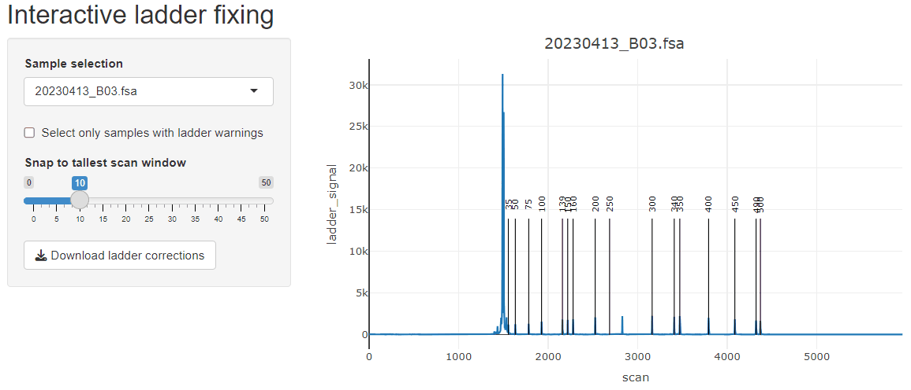
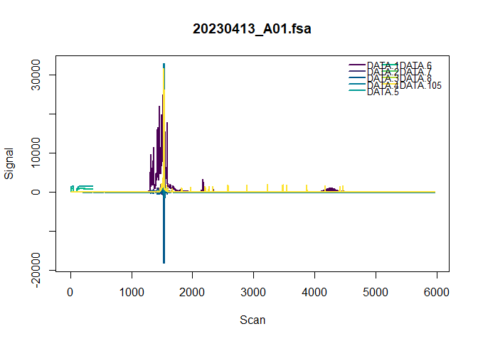
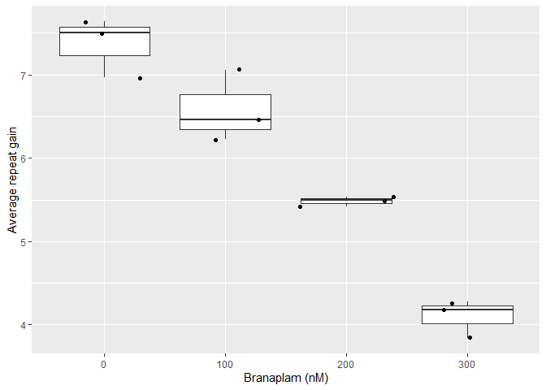

This package provides a pipeline for short tandem repeat instability analysis from capillary electrophoresis fragment analysis data (e.g fsa files). The main function processes the data and then and then repeat instability metrics are calculated (i.e. expansion index or average repeat gain).
This code is not for clinical use. There are features for accurate repeat sizing if you use validated control samples, but integer repeat units are not returned.
To report bugs or feature requests, please visit the Github issue tracker here. For assistance or any other inquires, contact Zach McLean.
If you use this package, please cite this paper for now.
How to use the package
Either you can use the code described below, or our Shiny app to use an interactive non-coding version.
In this package, each sample is represented by an R6 ‘fragments’ object, which are organized in lists. You usually don’t need to interact with the objects directly. If you do, the attributes of the objects can be accessed with $.
There are several important factors to a successful repeat instability experiment and things to consider when using this package which are discussed in an article.
Import data
Load the package:
First, we read in the raw data. In this case we will used example data within this package, but usually this would be fsa files that are read in using read_fsa(). The example data is also cloned since the next step modifies the object in place.
fsa_list <- lapply(cell_line_fsa_list, function(x) x$clone())Alternatively, this is where you would use data exported from Genemapper if you would rather use the Genemapper bp sizing and peak identification algorithms.
fragments_list_genemapper <- genemapper_table_to_fragments(example_data,
dye_channel = "B",
min_size_bp = 300
)Process Samples with trace
The trace() function streamlines the processing of fragment analysis data, from ladder assignment to repeat calling. Below is an overview of the key steps that are within trace():
1. Add Metadata
Metadata is used to enable advanced functionality, such as batch correction, repeat correction, and index peak assignment. Prepare a .csv file with the following columns:
| Column Name | Purpose | Description |
|---|---|---|
unique_id |
Required to link up the metadata file with samples | Unique identifier for each sample (e.g., file name). Must be unique across all runs. |
metrics_group_id |
Group samples for instability metrics (e.g., expansion index) | Group ID for samples sharing a common baseline (e.g., mouse ID or experiment group). |
metrics_baseline_control |
Identify baseline samples (e.g., inherited repeat length or day 0) | Set to TRUE for baseline control samples (e.g., mouse tail or starting time point). |
batch_run_id |
Group samples by run for batch or repeat correction | Identifier for each fragment analysis run (e.g., date). |
batch_sample_id |
Link samples across runs for batch or repeat correction | Unique ID for each sample across runs. |
batch_sample_modal_repeat |
Specify validated repeat lengths for repeat correction | Validated modal repeat length for samples used in repeat correction. |
2. Assign Ladders
Ladder peaks are identified in the ladder channel, and base pair (bp) sizes are predicted for each scan.
- Visual Inspection: Always inspect ladders to ensure correct assignment.
-
Manual Adjustment: If needed, use
fix_ladders_interactive()to adjust ladder assignments interactively.

3. Find Fragments
Fragment peaks are identified in the raw trace data. This step transitions the data from a continuous trace to a peak-based representation.
4. Identify Alleles
- Identify the main allele (modal peak) for each sample. Can handle samples with two alleles, but metrics are only calculated for the larger of the two.
5. Call Repeats
- Base pair sizes are converted to repeat lengths. This step has a lot of additional functionality including:
- Batch correction or accurate repeat sizing.
- Forcing whole repeat units between peaks (usually underestimated in fragment analysis data)
5. Assign Index Peaks
The index peak is the reference repeat length used for instability metrics like expansion index.
-
Grouped Assignment: Set
grouped = TRUEto use the modal peak of baseline control samples (e.g., mouse tail or day 0). -
Manual Override: Use
index_override_dataframeto manually assign index peaks if needed.
Main function
To carry out this pipeline, call the main function:
fragments_list <- trace(
fsa_list,
min_bp_size = 300,
grouped = TRUE,
metadata_data.frame = metadata,
show_progress_bar = FALSE)We can validate that the index peaks were assigned correctly with a dotted vertical line added to the trace. This is perhaps more useful in the context of mice where you can visually see when the inherited repeat length should be in the bimodal distribution.
plot_traces(fragments_list[1], xlim = c(110, 150))
Calculate instability metrics
All of the information we need to calculate the repeat instability metrics has been identified. We can use calculate_instability_metrics() to generate a dataframe of per-sample metrics.
metrics_grouped_df <- calculate_instability_metrics(
fragments_list = fragments_list,
peak_threshold = 0.05,
window_around_index_peak = c(-40, 40)
)These metrics can then be used to quantify repeat instability. For example, this reproduces a subset of Figure 7e of our manuscript.
library(ggplot2)
library(dplyr)
metrics_grouped_df |>
left_join(metadata, by = join_by(unique_id)) |>
filter(
day > 0,
modal_peak_signal > 500
) |>
ggplot(aes(as.factor(treatment), average_repeat_change)) +
geom_boxplot() +
geom_jitter() +
labs(y = "Average repeat gain",
x = "Branaplam (nM)") 